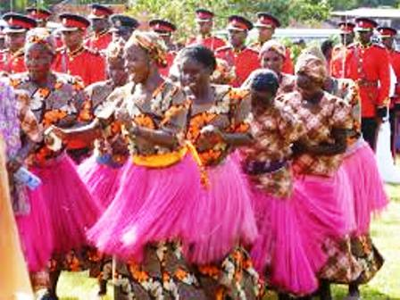
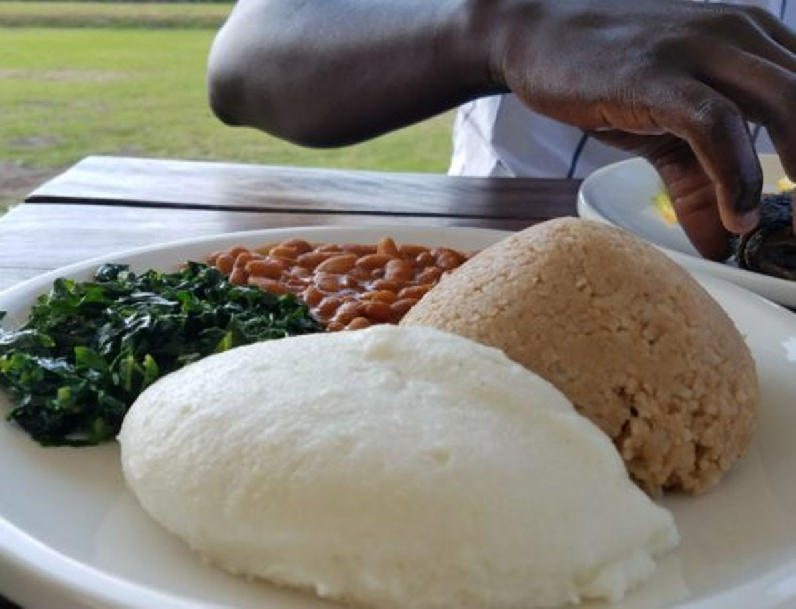
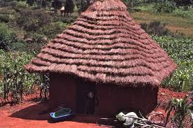

The Luhya people are one of Kenya’s largest ethnic groups, mainly found in the western region across Kakamega, Bungoma, Vihiga, Busia, and parts of Trans Nzoia. They consist of about 18 sub-tribes, including the Bukusu, Maragoli, Wanga, and Isukha, who share similar language roots and cultural practices. Traditionally, the Luhya are Bantu-speaking people believed to have migrated from Central Africa, and they value unity, community life, and respect for elders.
Education has become a major pillar in modern Luhya communities, with many families valuing schooling as a path to success. Over the years, the region has produced prominent leaders, educators, and professionals who have shaped Kenya’s social and political landscape. At the same time, cultural festivals, storytelling, and community gatherings remain important avenues for teaching younger generations about their roots, ensuring that traditional values continue to thrive alongside modern life.
Family is central to Luhya culture, with strong extended family ties and great respect for parents and elders. Marriage customs often involve the payment of a dowry in livestock and are celebrated with songs, dances, and feasting. The Luhya are predominantly farmers, growing crops like maize and sugarcane, while also engaging in trade and modern professions. Christianity is widely practiced today, though traditional beliefs in ancestral spirits and rituals still hold cultural importance.
Luhya society is guided by deep moral values that emphasize community cooperation, honesty, and hard work. Elders play a vital role in leadership, conflict resolution, and cultural preservation, often serving as the custodians of traditional wisdom. In the past, the Wanga Kingdom, led by Nabongo Mumia, stood out as one of the most organized political systems among the Luhya, with established leadership structures and relations with early Arab and British traders. This rich history contributes to the Luhya people's strong sense of pride and unity.
Music and dance play a major role in Luhya traditions, with the Isukuti dance standing out as a lively symbol of their heritage. Important rites such as circumcision among the Bukusu mark the transition from boyhood to manhood, celebrated through community gatherings. Despite modernization and urban influence, the Luhya people maintain a strong sense of identity, pride, and cultural continuity.
In their day-to-day lives, the Luhya people enjoy rich cuisine that reflects their agricultural lifestyle. A popular staple is ugali, often served with vegetables, chicken, or beef stew, and sometimes accompanied by traditional drinks like busaa (a local brew). Hospitality is a key aspect of Luhya identity — visitors are warmly welcomed and always offered food and drink as a sign of respect. Through their customs, language, and community spirit, the Luhya continue to celebrate both their traditions and progress in a changing world.
